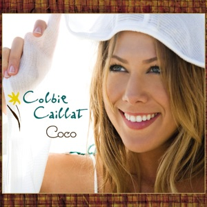
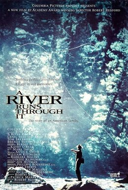
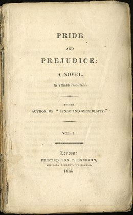
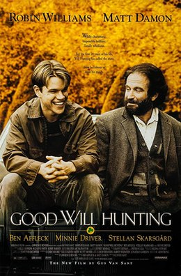
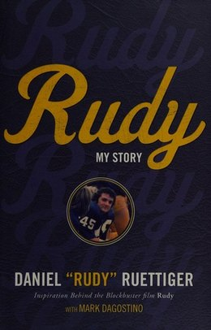
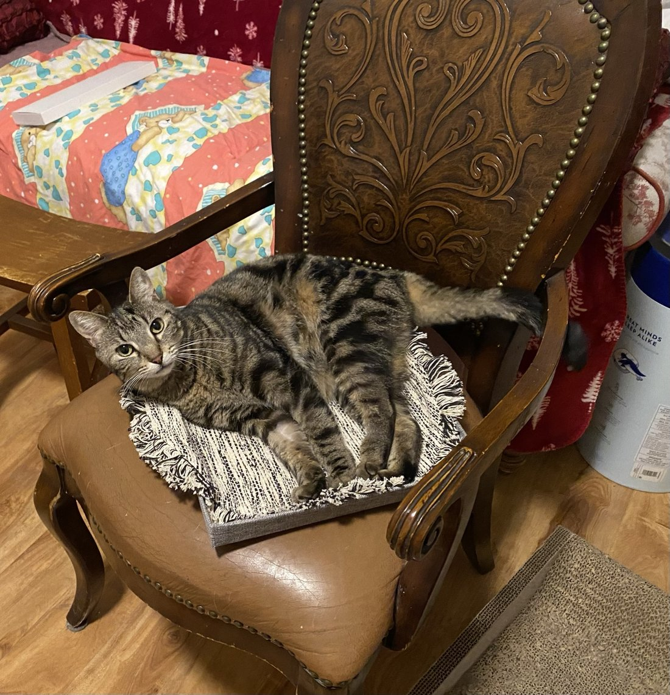
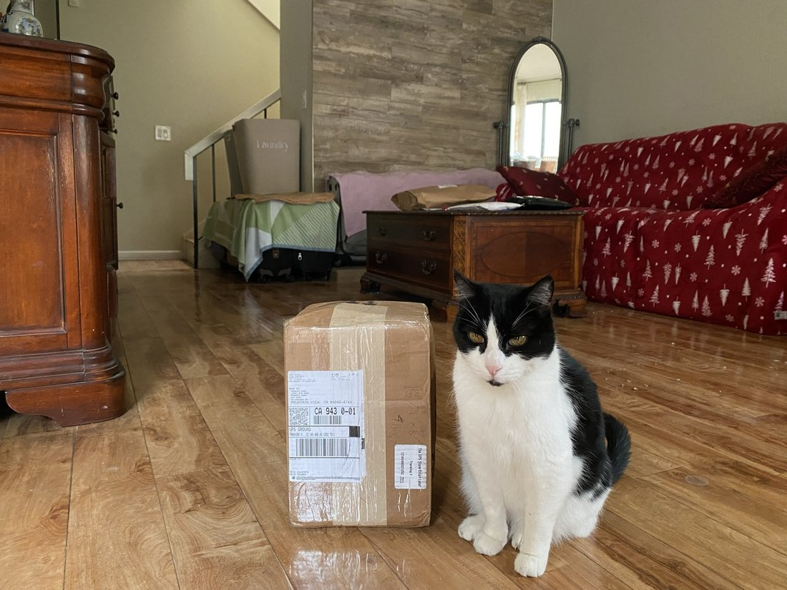
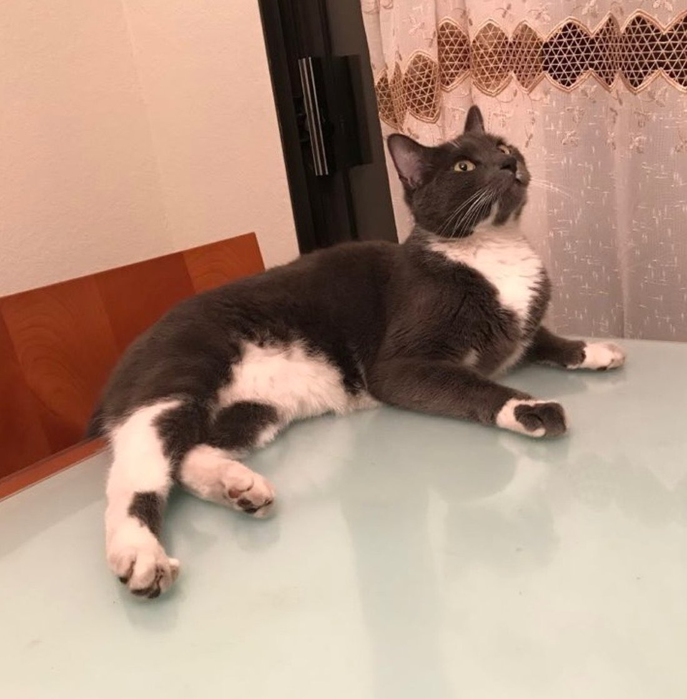

So who is Francis
So Who Is Francis?

A fair question, asked of me often enough that I have had to develop an answer. The honest one is that I do not think I am one thing, and I have stopped apologizing for it.
People get read as one-dimensional, and I know roughly which dimension I get read as, because I have heard the sentence. Oh, the short Asian guy? Who is also, and I want this on the record, super awesome and handsome. Oh, that class clown kid? Yeah, him. Two dimensions if you are lucky, three if somebody bothers to stay in the room long enough to find one. I would like to make the case that I am at minimum four, and that the fourth is the interesting one, because it is the part that connects the other three and it is the part almost nobody thinks to ask about.
My spirit animal is a monkey who talked back to heaven
Sun Wukong. The Monkey King. Appetite, cleverness, and mischief of the particular kind that makes trouble and makes people love him anyway, enormously capable and enormously undisciplined about it. He argues with heaven, and that is the part I want to sit on for a second, because he does not argue with heaven by shouting at it. He reads the paperwork. He finds the clause. He gets himself written into the register of immortals on a technicality and then looks genuinely wounded when anybody objects.
I did not pick him because he is flattering. I picked him because I recognised the method, and also, if we are being thorough, the appetite.
I was a fat kid. I am not going to dress that up, and there is no photograph of it on this site, partly out of vanity and partly because you do not need one. What happened is that somewhere in elementary school the American diet found me and I put up no resistance whatsoever. The Monkey King steals the peaches of immortality, eats every single one, and is then astonished that heaven has taken this personally. I have been at that banquet. I know exactly what he was thinking, which is nothing, because the peaches were right there.
I was, by any fair accounting, a menace. In and out of detention the whole way through high school, and I would like to claim lunch detention hall of fame, which is not an honour anybody hands out and which I have therefore awarded to myself. Freshman year I got caught mooning somebody, which I am now putting in writing on my own website, which should tell you roughly how much peace I have made with it. Pranks constantly. And a suspension in middle school that I later stood up and told five hundred people about in my commencement speech, because I have never once been able to tell the story of how I got somewhere without including the part where I was nearly asked to leave.
Here is what I want to be precise about, though, because it matters to me. Almost none of it was defiance. I was not angry at anybody and I was not trying to burn anything down. I was doing the thing Wukong does, which is looking straight at a rule, understanding exactly what it is for, and then noticing with enormous delight that it does not quite say what it thinks it says. That instinct got me in a spectacular amount of trouble as a child. It is also, unchanged and unrepentant, the instinct that makes me useful now when somebody hands me a process and asks why it takes ninety minutes.
I talk to God most days. I have also, and I am aware of precisely how this sounds, said a few words to the other one, not out of any allegiance but because it seemed impolite to argue with only one side of something I do not pretend to understand. That is arguing with heaven. That is the whole trait, and I have stopped trying to grow out of it.
And then heaven pins him under a mountain for five hundred years, and he comes out the same creature, still funny, still impossible, but finally pointed somewhere.
I have been under a few mountains. Smaller ones, and considerably shorter sentences, but the shape is the same: a thing stops you, and you are stuck under it for a while with nothing to do but think about how you got there. What I have found, every single time and with a consistency that has started to feel like a law, is that I come out of them better than I went in. Not because the mountain taught me anything. Mountains are inert. It is that being stopped is the only condition under which I reliably do two things I should be doing anyway, which are asking somebody for help and sitting still long enough to work out what actually happened.
Being stopped has never once touched the appetite. It has only ever given it a direction.
The paperwork, for the astrologically curious
- Sign
- Pisces
- Lunar year
- Golden Pig
- Trait I am accused of
- Quicksilver tongued
- Trait I would claim
- Intelligent playfulness
- Three words for 2026
- Effervescent. Wonder-filled. Indomitable.
- Standing instruction
- Doubt the default
- Second standing instruction
- Talk to strangers
What Ms. Yu said, which I have never disputed
My trigonometry teacher, asked about me for the school paper, described me as the kind of student who gives the teacher a headache in class, and then the teacher goes home and secretly laughs about all his antics.
I have never disputed it. I have it more or less framed.
There were other teachers who got as far as the headache and stopped. She is the one who kept reading, and I have thought about the difference between those two teachers for years.
Five things that explain me faster than I can




Line them up and the pattern is not what you would call subtle. Every one of them is about somebody handed a smaller life than they turned out to be capable of, who declined it, politely in Austen’s case and with considerably less ceremony in Rudy’s. They are also, all five, arguing that feeling things deeply is a competence rather than a nerve failure, which is not the lesson boys are generally issued at birth and is precisely the one I required. From Maclean and Gerwig: the ordinary hours are the prize, not the waiting room outside it. From Will Hunting: being clever is the least interesting thing about a person and by a distance the easiest thing to hide behind. And from Elizabeth Bennet, who I am reasonably confident would have found me exhausting within ten minutes, that holding out for the correct thing costs you socially and is worth it anyway.
Embracing your corny
I am corny on purpose. I would recommend it, because the alternative is a whole life spent performing a coolness that, and I have checked, not one person has ever enjoyed having performed at them. Seeming unmoved is a full-time job with no salary.
I am a poet some distance before I am an analyst, which is an unhelpful thing to admit on a website about finance and which I am admitting anyway. I like the beach. I like reflecting on the beach, which is a separate activity. I like then finding somebody to tell about the reflecting, which is a third. Romance films work on me without exception and without any resistance worth mentioning, and I stopped pretending to be above them at roughly the same age I stopped pretending not to want things, those being the same decision in two different coats.
And I have very specific instructions about how to treat somebody, because my mother taught them to me and she did not present them as optional. Buy the flowers, and buy them for no occasion, since an occasion is only a permission slip. Say the compliment out loud rather than thinking it warmly and assuming it arrived. Never go to bed upset, not once, however late that decision makes the night. Open the door, every time, for the rest of your life.
And when something has gone wrong between you, do the harder thing, which is to sit down and work out honestly whether this is a you problem, because it very often is, and because it is almost never only a you problem either, which is the entire reason the word is we. Take the accountability all the way down to the bottom of it, past the point where it stops making you feel good about yourself for taking it, and then go a little further than that.
And I am also the other thing
I look up to bodybuilders. Genuinely, no irony, and for a specific reason: the entire discipline is a public argument that you can change what you were handed, provided you are willing to be staggeringly boring about it for several consecutive years. That is the whole sport. Boredom, applied.
I watch an unreasonable quantity of NFL, and I mean unreasonable in the technical sense that I hold opinions about offensive line play which nobody has ever requested. I watch UFC and will explain, at length, unprompted, that the fight was decided in the first ninety seconds by somebody’s stance and not by the thing everyone in the room was looking at. I know an embarrassing amount about cars, essentially none of it useful, all of it retained without effort, while the periodic table passed through me like light through a window. I was a captain on a football team and I am the one yelling in the huddle and I enjoy it enormously. I also still know more about dinosaurs than any grown man can defend, and I have stopped trying to.
None of which is in tension with a single sentence of the section above it, and that is the whole of what I am trying to say. These are supposed to be two different men, the one who cries at Little Women and the one who wants to talk about the offensive line, and they were never two men at all. They have always been the same one, and the only thing that ever changes is which room he is standing in and how safe that room has made itself.
Things I will read about until three in the morning
Human pathogenesis. Biology and anatomy, mechanism first, always. I keep profiles on myself and run bloodwork against them, which sounds clinical and is in fact just being nosy about my own body.
Then human history, archaeology, ancient civilisations, what people were doing before they had any of this. Same appetite that made me an insufferable dinosaur child, simply aimed at a longer stretch of time and with marginally better manners.
Here is the one I bring up at dinner and refuse to let go of. For most of recorded European history people did not sleep the way we do. They slept in two shifts. You went down not long after dark for roughly four hours, then woke naturally around midnight into an interval people simply called the watch, and stayed up for an hour or two. Not anxiously. On purpose. They prayed, tended the fire, talked to whoever was next to them, visited neighbours, had sex, interpreted the dreams they had just surfaced from. Then a second sleep until dawn.
The historian A. Roger Ekirch found hundreds of references to it, casually, across centuries, in diaries and court records and medical texts, described the way you would describe breakfast. It disappeared within a few generations of artificial light, and it disappeared so completely that we now diagnose the waking as a disorder and medicate it.
We took a thing humans did for a thousand years, forgot it entirely, and started treating it as a symptom.
I think about that constantly, and not only about sleep. I think about how much of what we call normal is about two hundred years old and wearing a very convincing costume.
The small operations
There is an entire method behind this, involving crumbs and operating expenses and an argument that contentment is cheaper to build than joy, and I have put it in the fun section rather than here. What belongs here is the residue: the habits somebody would actually notice if they had to live with me.
I care about clothes, which I mention because people assume the finance thing means I own four identical shirts. I talk to strangers in queues, all queues, with no provocation required. And the genuine high point of a given week is the evening my roommates and I finally clean the apartment and somebody puts music on and everybody goes slightly stupid and dances badly in a kitchen that is at last not disgusting. I have never wanted a better evening than that, and I am aware that this makes me sound about seventy.
Once a day, every day, I send somebody a real compliment. Costs nothing, returns more than anything else I do, and remains somehow the least popular strategy available to the general public.
I love waking up. Not in a wellness way. I have simply never been sorry a day started, which I understand is an irritating way to be and which I have no plans to correct.
The rules I actually keep
- I will never raise my voice at my mother, my brother, or anyone in my family.
- I will not gossip, and I will not be disrespectful to friends or to strangers.
- I will spread encouragement to the people around me, on purpose, out loud.
- I will be more afraid of not trying than of failing.
Those live in a note on my phone, between a grocery list and a half-finished joke, which I accept is a ridiculous place to keep a moral code. They have held up better than most things I have stored there.
And three cats



Between them they have supervised most of the homework ever completed in this house, and contributed nothing. One of them turns up in the first photograph on the site, which should tell you how long this arrangement has been running and how little say I had in it.
If you have made it this far you may as well introduce yourself. fyruan@usc.edu